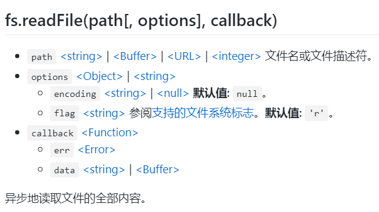
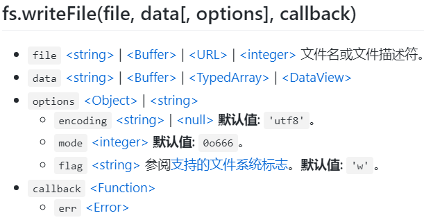

Node文件模块
1 待办事项命令行程序需求
-
功能：
-
可以列出所有的todo；
-
新增、编辑、删除todo；
-
修改todo状态为已完成/未完成
-
-
命令
t t add 任务名 t clear
2 创建命令行项目
- 空文件夹下，执行：
yarn init -y
-y表示跳过交互式对话（确定版本等信息），根据默认值生成package.json
- 创建
index.js，引入commanderjs库，添加add和clear子命令：
const program = require('commander');
program
.option('-x,--xxx', 'desc of x')// x选项 即在node index命令后输入的选项
program
.command('add')// 子命令
.description('add a task')// 子命令描述
.action((...args) => { //拿到用户输入的所有字符串参数
const words = args.slice(0,-1).join(' ')// 由于最后一个参数默认是command对象，因此需要对参数进行预处理
})
program
.command('clear')// 子命令
.description('clear all tasks')// 子命令描述
.action(() => {
// 执行clear操作
})
program.parse(process.argv);
3 实现创建任务功能
一般命令行程序的入口文件为cli.js，而index.js中写主要功能实现，因此将index重命名为cli.js
3.1 nodejs读取文件api：

fs.readFile('/etc/passwd', (err, data) => {
if (err) throw err;
console.log(data);
});
回调会传入两个参数 (err, data)，其中 data 是文件的内容。
如果没有指定 encoding，则返回原始的 buffer。
options 中的当flag 选项采用字符串时，可用以下标志：
'a'- 打开文件用于追加。如果文件不存在，则创建该文件。'ax'- 与'a'相似，但如果路径已存在则失败。'a+'- 打开文件用于读取和追加。如果文件不存在，则创建该文件。'ax+'- 与'a+'相似，但如果路径已存在则失败。'as'- 以同步模式打开文件用于追加。如果文件不存在，则创建该文件。'as+'- 以同步模式打开文件用于读取和追加。如果文件不存在，则创建该文件。'r'- 打开文件用于读取。如果文件不存在，则出现异常。'r+'- 打开文件用于读取和写入。如果文件不存在，则出现异常。'rs+'- 以同步模式打开文件用于读取和写入。指示操作系统绕过本地的文件系统缓存。
3.2 获取home路径下的.todo文件
nodejs获取系统home目录路径：
const homedir = require('os').homedir()
nodejs获取用户home目录路径，如果未获取到，则使用系统home路径
const home = process.env.HOME || homedir
- 处理路径格式问题，以适配任意系统：
const p = require('path')
const dbPath = p.join(home,'.todo')
3.3 nodejs写文件api

3.4 创建任务功能初步实现
const fs = require('fs')
module.exports.add = (title) => {
fs.readFile(dbPath, {flag:'a+'}, (error,data) => {
if(error) { console.log(error) }
else {
let list
// 如果文件是空的，则创建一个数组来存数据
try {
// 尝试让list等于data中的数据
list = JSON.parse(data.toString())// 字符串=>数组对象
} catch(error2) {
// 如果出错（说明data为空，解析失败），则让list成为空数组
list = []
}
// 在list中添加一个任务
const task = { title, done:false }
list.push(task)
const string = JSON.stringfy(list)// 数组对象=>字符串
// 储存任务到文件
fs.writeFile(dbPath, string+'\n', (error3) => {
if(error3){ console.log(error) }
})
}
})
}
3.5 优化代码
- 理清功能需求，从而面向接口编程，最终优化结果：
const db = require('./db.js')
module.exports.add = (title) => {
// 读取之前的任务
const list = db.read()
// 添加一个title任务
list.push({ title, done: false })
// 存储任务到文件
db.write(list)
}
- 创建
db对象，内置读写两个接口，并使用Promise进行封装，db.js:
const db = {
// 读文件接口
read(path = dbPath) {// 指定默认参数
return new Promise((resolve, reject) => {
// 读取之前的任务
fs.readFile(path, { flag: 'a+' }, (error, data) => {
if (error) return reject(error)
let list
try {
list = JSON.parse(data.toString())
} catch (error) {
list = []
// 这是个异步函数，list不能直接返回，因为这是存在于回调函数中的
}
resolve(list)// 如果成功了，则解析并返回list给外面
})
})
},
// 写文件接口
write(list, path = dbPath) {// 指定默认参数
new Promise((resolve, reject) => {
const string = JSON.stringify(list)
fs.writeFile(path, string + '\n', (error) => {
if (error) return reject(error)
// return表示如果到这个if里面的话就终止，不用往后面走了
resolve()
})
})
}
}
module.exports = db
4.实现其他功能
4.1 清除全部任务
实际上就是写一个空数组将其覆盖即可，同样也是异步的:
module.exports.clear = async () => {
await db.write([])
}
4.2 交互列表及交互功能实现
- 引入制作命令行交互功能的库：
const inquirer = require('inquirer')
- 用户在执行
node cli命令时，进入交互界面，则需要对用户输入的命令条数进行判断process.argv能够获取到用户输入的参数数组，在cli.js中对其长度进行判断：
if (process.argv.length === 2) {
api.showAll()
}
- 在
index.js中编写主要实现逻辑
module.exports.showAll = async () => {
// 读取之前的任务
const list = await db.read()
// 打印之前的任务，并变为可操作列表
printTasks(list)
}
- 交互列表首页：
function printTasks(list) {
inquirer// 制作控制台交互功能的库
.prompt({
type: 'list',
name: 'index',//
message: '请选择你想操作的任务：',
choices: [
{ name: '退出', value: '-1' },
...list.map((task, index) => { return { name: `${task.done ? '[x]' : '[_]'}-${index + 1}-${task.title}`, value: index.toString() } }),
{ name: '+创建任务', value: '-2' }
]
}).then(answer => {
const index = parseInt(answer.index)// 把选中的index转换成数字
if (index >= 0) {
// 说明选中了一个任务，继续进入操作列表
askForAction(list, index)
} else if (index === -2) {
// 说明选择的是创建任务
askForCreate(list, index)
}
})
}
- 选中任务时的操作列表：
function askForAction(list, index) {
inquirer.prompt({
type: 'list',
name: 'action',// 用户选中后返回的value的名称
message: '请选择操作',
choices: [
{ name: '退出', value: 'quit' },
{ name: '已完成', value: 'markAsDone' },
{ name: '未完成', value: 'markAsUnDone' },
{ name: '修改标题', value: 'updateTitle' },
{ name: '删除任务', value: 'remove' },
],
}).then(answer => {
switch (answer.action) {
case 'markAsDone':
list[index].done = true
db.write(list)
break;
case 'markAsUnDone':
list[index].done = false
db.write(list)
break;
case 'updateTitle':
// 更新标题需要一个输入框
inquirer.prompt({
type: 'input',
name: 'title',
message: '设置新标题：',
default: list[index].title// 默认值为原标题
}).then(answer1 => {
list[index].title = answer1.title
db.write(list)
})
break;
case 'remove':
list.splice(index, 1)
db.write(list)
console.log('删除成功！')
break;
}
})
}
- 选择创建任务时的操作：
function askForCreate(list) {
inquirer.prompt({
type: 'input',
name: 'title',
message: '输入任务标题：'
}).then(answer => {
list.push({ title: answer.title, done: false })
db.write(list)
})
}
5 发布至npm
- 修改
package.json，添加”bin“，指定命令行程序最终命令是什么；添加”files“，声明哪些文件在发布时是有用的。
"bin":{
"t":"cli.js"
},
"files":[ "*.js" ]
- 在
cli.js第一行加入shebang，告诉命令行使用什么来运行
#!/usr/bin/env node
- 正式发布前，需要使用yrm或nrm将淘宝源修改为原始源
nrm ls
nrm use npm
- 登录
npm adduser / yarn login
yarn publish / npm publish
- 下载
yarn global add node-todo-gsq
npm i -g node-todo-gsq
- 卸载
yarn global remove node-todo-gsq
npm uninstall -g node-todo-gsq
- 升级
yarn upgrade node-todo-gsq
npm update node-todo-gsq
- 或安装时指定版本
npm i -g node-todo-gsq@0.0.3
最后修改于 2021-06-25